| 副雑音 | 音の性質 | 代表疾患 |
|---|---|---|
| Wheezes（笛声音） | ヒュー・連続性 | 喘息、COPD |
| Rhonchi（いびき音） | ゴロゴロ・低調連続 | 気管支炎・分泌物貯留 |
| Fine crackles（捻髪音） | パチパチ・吸気終末 | 間質性肺炎・IPF |
| Coarse crackles（水泡音） | ブツブツ・吸気早期 | 肺炎・気管支拡張症 |
| Friction rub（胸膜摩擦音） | キュッキュ・吸呼気 | 胸膜炎 |
| Stridor（吸気性喘鳴） | ヒュー・吸気優位 | 喉頭・気管狭窄 |
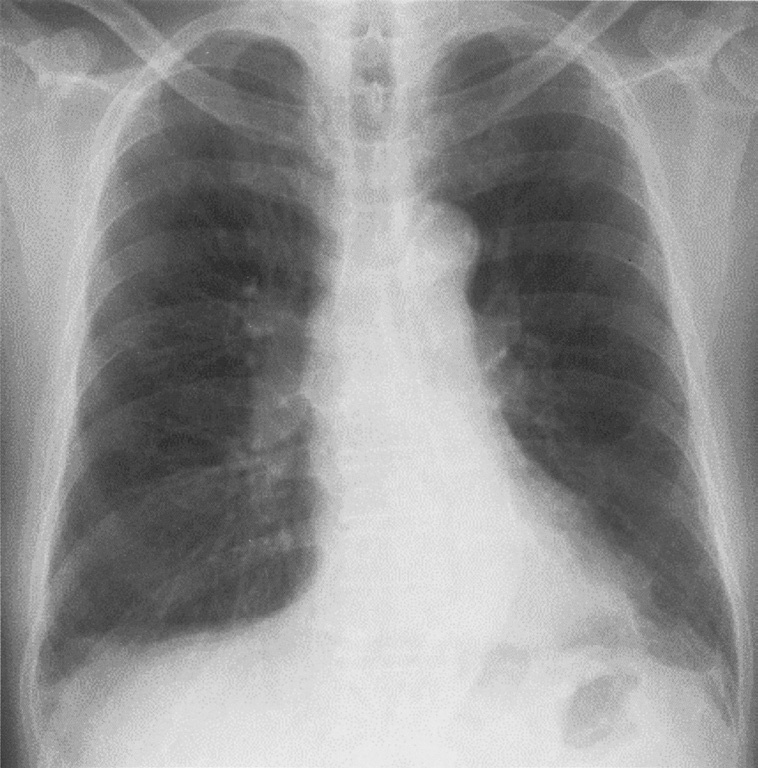
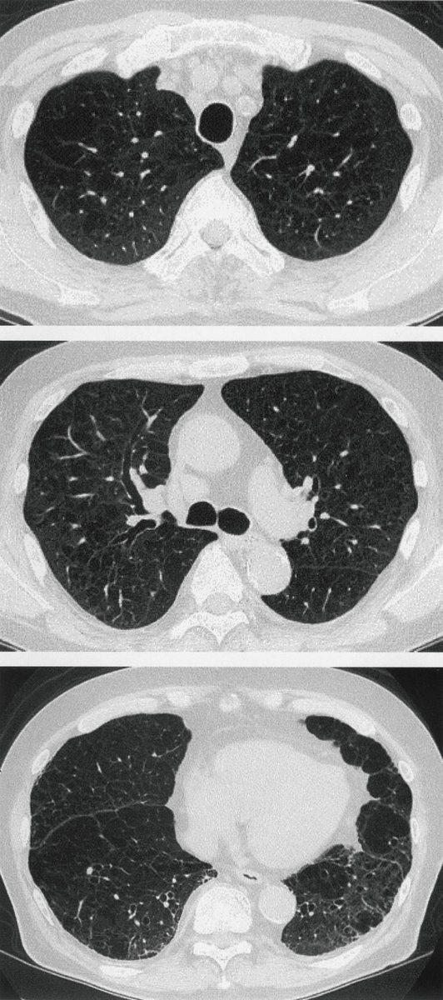
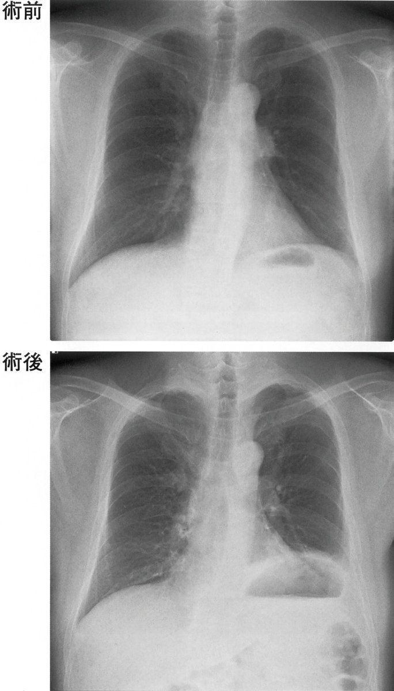
| 神経 | 損傷時の症状 |
|---|---|
| 横隔神経 | 横隔膜挙上・深呼吸障害 |
| 反回神経 | 嗄声・誤嚥 |
| 交感神経幹 | Horner症候群 |
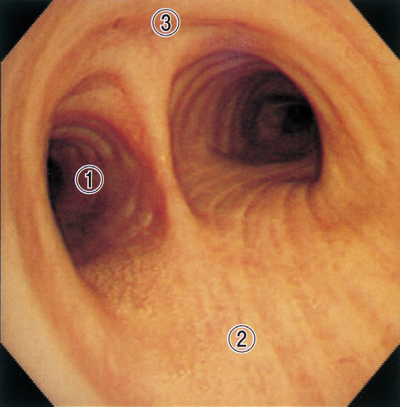
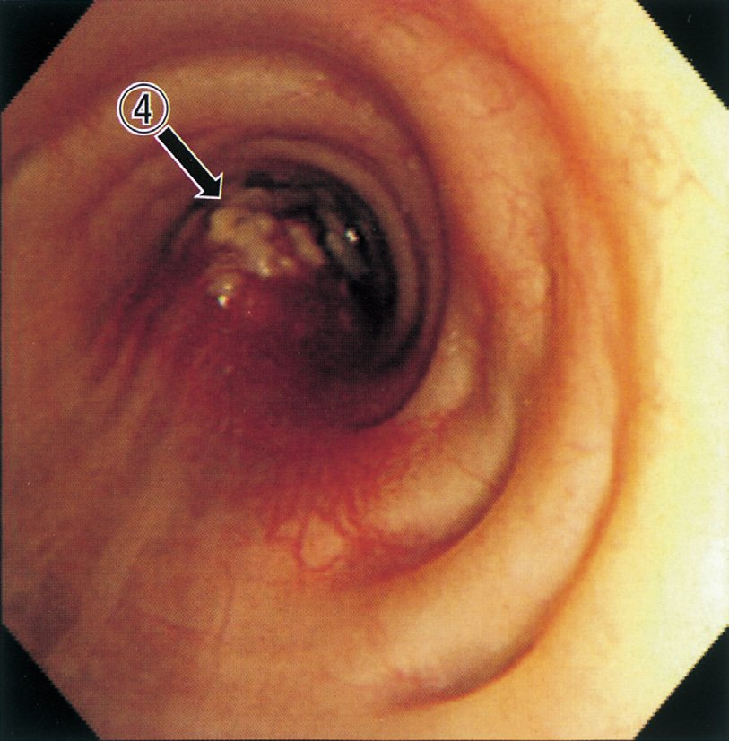
| P/F比 | 診断（Berlin基準） |
|---|---|
| <100 | 重症ARDS |
| 100〜200 | 中等症ARDS ← 本例(160) |
| 200〜300 | 軽症ARDS |
| >300 | 正常 |
| 中枢性 | 末梢性 | |
|---|---|---|
| 原因 | 肺疾患・右左シャント | 末梢血流↓（寒冷・心不全） |
| SaO₂ | 低下 | 正常 |
| 部位 | 口唇・舌すべて | 爪床・四肢末端 |
| 温熱 | 改善しない | 温めると改善 |
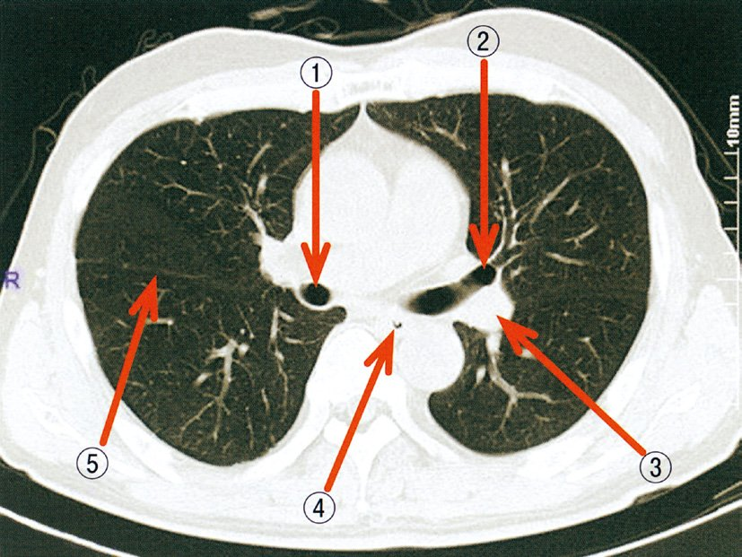
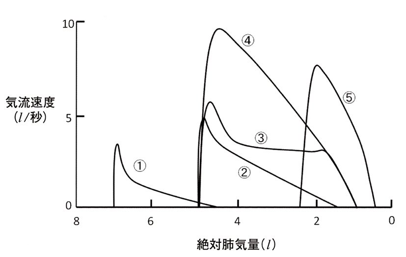
| 疾患 | 特徴 |
|---|---|
| COPD（閉塞性） | 呼気曲線が凹（Scoop）、RVシフト右方 |
| 拘束性 | ループ全体が小さい、急峻な呼気曲線 |
| 胸腔外上気道閉塞 | 吸気部分平坦化 |
| 胸腔内上気道閉塞 | 呼気部分平坦化 |
| 役割 | 主な筋 |
|---|---|
| 主吸気筋 | 横隔膜（最重要）、外肋間筋 |
| 補助吸気筋 | 胸鎖乳突筋、前・中斜角筋、肋骨挙筋 |
| 安静呼気 | 弾性収縮（受動的）→ 筋不要 |
| 強制呼気 | 内肋間筋、腹直筋、外腹斜筋、内腹斜筋 |
| 原因 | 機序 | SpO₂方向 |
|---|---|---|
| CO中毒 | COHbを酸化Hbと誤認識 | 偽高値 |
| メトHb血症 | 吸収スペクトル混在 | 85%に収束 |
| マニキュア | 光の吸収に干渉 | 偽低値・不安定 |
| 低体温・脱水 | 末梢血流↓→シグナル不安定 | 不安定 |
| 高血糖 | 無関係 | 影響なし |
| スパイロメトリで可 | 別法が必要（RV含む） |
|---|---|
| TV・IRV・ERV・VC・FVC・FEV₁ | RV・FRC・TLC |
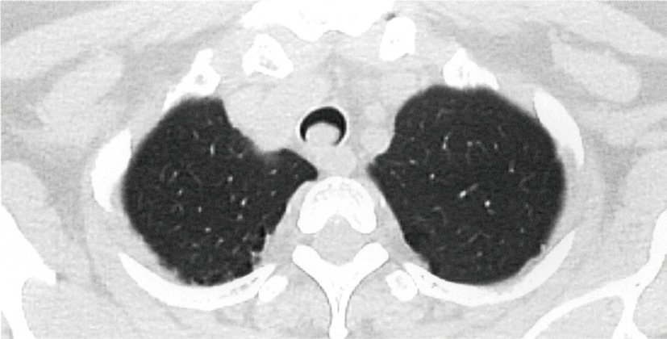
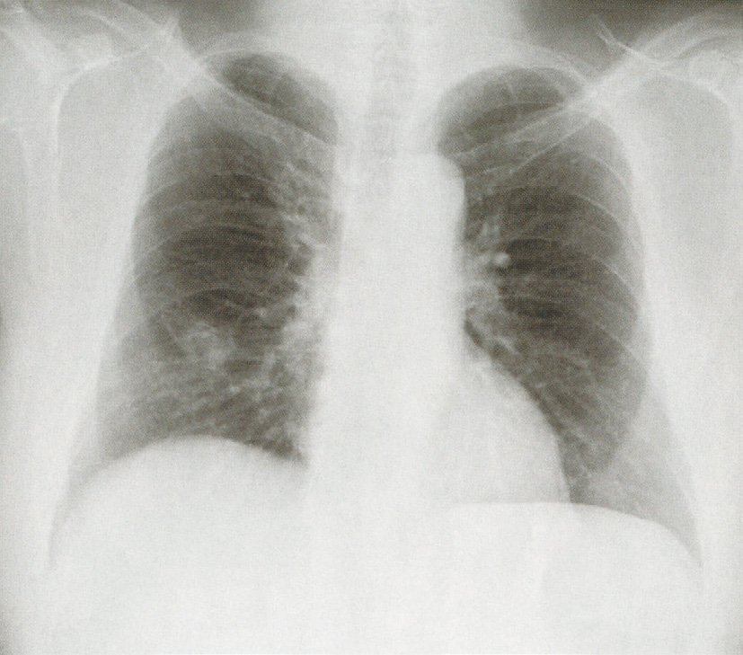
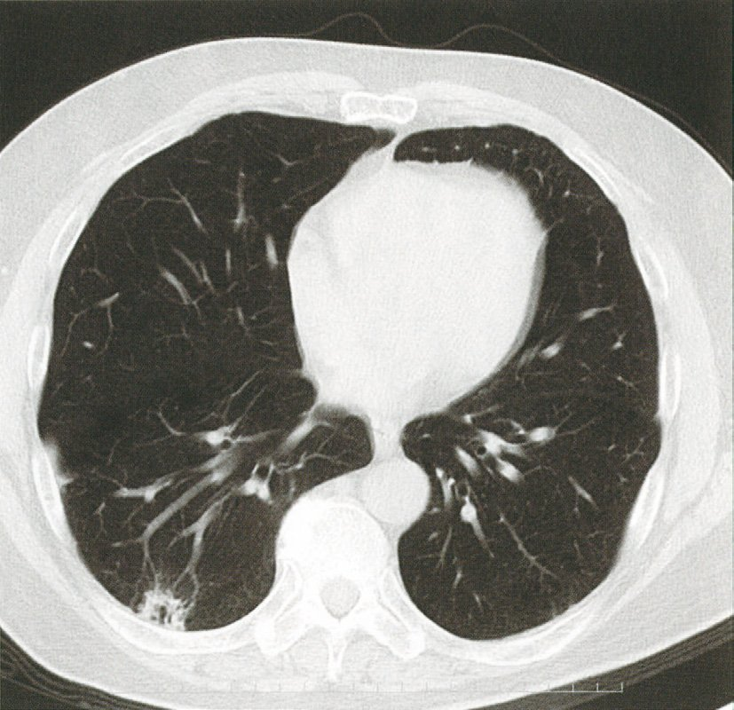
| 不明瞭になる境界 | 対応する肺区域 |
|---|---|
| 右心境界 | 右中葉（内側区） |
| 右横隔膜 | 右下葉（内側基底区） |
| 左心境界 | 左舌区（上葉） |
| 左横隔膜 | 左下葉（前内側基底区） |
| 上行大動脈 | 右上葉（前区） |
| 筋 | 作用 | 備考 |
|---|---|---|
| 横隔膜 | 安静吸気の70〜80% | 最重要吸気筋 |
| 外肋間筋 | 吸気補助 | 安静時も活動 |
| 胸鎖乳突筋・前斜角筋 | 努力吸気 | 安静時は不活動 |
| 内肋間筋 | 強制呼気 | 呼気筋 |
| 腹筋群 | 強制呼気 | 呼気筋 |
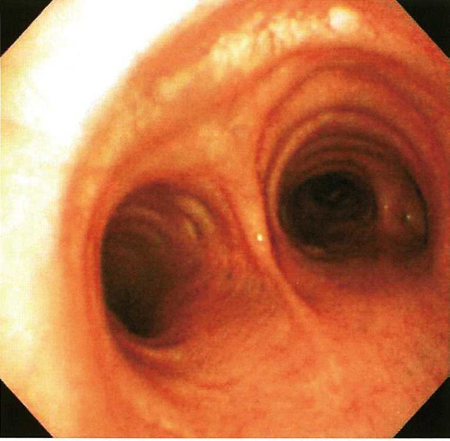
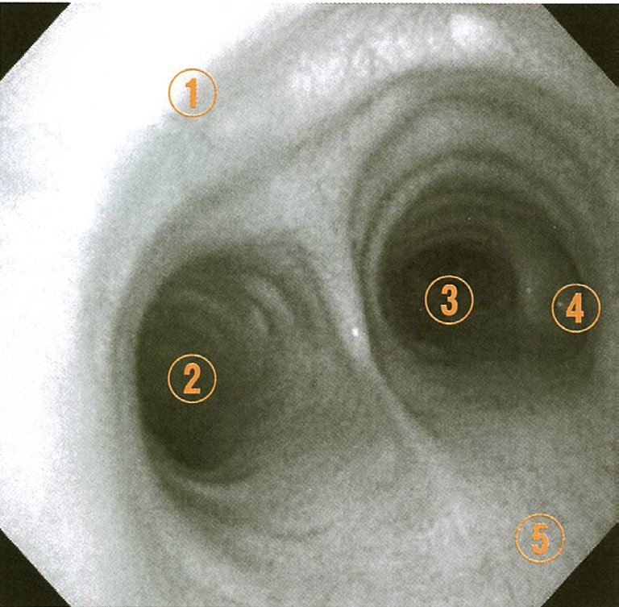
| 筋 | 作用 | 特徴 |
|---|---|---|
| 横隔膜 | 安静吸気の70〜80% | 横神経（C3-5）支配 |
| 外肋間筋 | 吸気補助 | 肋間神経支配 |
| 内肋間筋 | 強制呼気 | 呼気筋 |
| 胸鎖乳突筋 | 努力呼吸時の副呼吸筋 | 安静時は関与しない |
| 喘鳴の時相 | 病変部位 |
|---|---|
| 吸気優位（Stridor） | 胸外（上気道・気管）→吸気陰圧でさらに狭窄 |
| 呼気優位（Wheeze） | 胸内（気管支以下）→呼気陽圧でさらに閉塞 |
| 両相性 | 固定性狭窄（腫瘍など） |
| 疾患 | 正しい所見 |
|---|---|
| 気胸 | 呼吸音消失・鼓音 |
| 喘息 | wheezes（呼気優位） |
| 肺塞栓症 | 胸膜摩擦音（肺梗塞時）または正常 |
| IPF | fine crackles（Velcro音）両側下肺野 |
| COPD | wheezes・呼吸音減弱（気腫型） |
| 指標 | 正常値 | 本問 |
|---|---|---|
| 動脈血pH | 7.35〜7.45 | 7.40 ✅ |
| PaO₂ | 80〜100 Torr | 90 ✅ |
| SvO₂（混合/中心静脈） | 65〜75% | 40% ❌ |
| HCO₃⁻ | 22〜26 mEq/l | 24 ✅ |
| A-aDO₂ | <10〜15 Torr | 10 ✅ |
| 打診音 | 疾患 |
|---|---|
| 鼓音・過共鳴音 | 気胸・肺気腫（空気↑） |
| 濁音 | 肺炎・無気肺・肺水腫・肺線維症・胸水 |
| 清音（正常） | 正常肺野 |
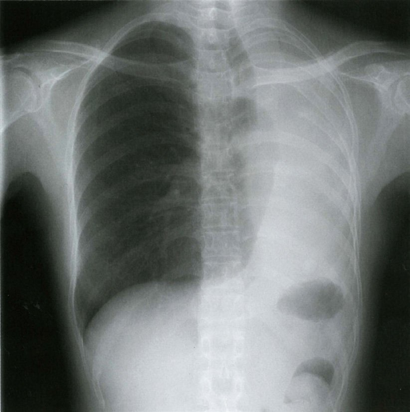